Etapas do Reconhecimento de Padrões
Pipeline de Reconhecimento de Padrões
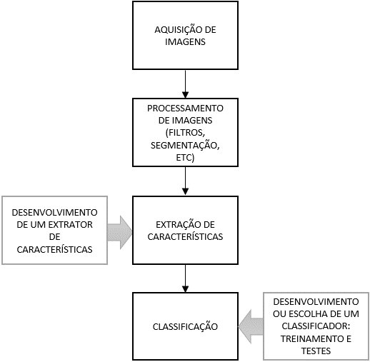
1. Obtenção dos Dados
A coleta de dados é a base de todo o processo de predição:
- Sensores e IoT (Internet of Things): Essencial na Indústria para monitorar peso, temperatura, umidade, vibração e velocidade em tempo real.
- Dispositivos de Imagem e Som: Câmeras de vigilância, microfones acústicos para escuta de rolamentos, satélites, escâneres e esteiras de produção.
- Dados Laboratoriais e Biomédicos: Sequenciadores genômicos, hemogramas, medições químicas de qualidade da água/óleo.
2. Pré-processamento: Limpeza
O pré-processamento garante que os dados cheguem com qualidade ao modelo:
- Identificação e remoção de problemas:
- Amostras com pouca variância (não ajudam o modelo a discernir padrões).
- Amostras com alta correlação (redundância de informações que causa peso excessivo).
- Tratamento de ausência de dados (valores null, NaN ou falhas pontuais do sensor).
2. Pré-processamento: Normalização
Algoritmos baseados em distância são extremamente sensíveis à magnitude. Faz-se necessário aplicar:
- Padronização (Z-Score): Centraliza a média em 0 e estabelece a variância: \[ x' = \frac{x - \mu}{\sigma^2} \] (Onde \(\mu\) é a média e \(\sigma^2\) é a variância/desvio)
- Transformação Logarítmica (\(\log_2\) ou \(\ln\)): Útil para reduzir distorções entre grandezas muito variadas.
2. Pré-processamento: Normalização
- Reescala Min-Max (Intervalo \([0,1]\)): \[ x' = \frac{x - \min(x)}{\max(x) - \min(x)} \]
Distância Matemáticas - Definição
Para classificar padrões, precisamos medir a “distância” entre duas amostras no espaço \(S\). Para uma métrica ser matematicamente válida, \(d(a, b)\) deve satisfazer:
- Não negatividade: A distância não pode ser negativa. \[ d(a, b) \geq 0, \quad \forall a, b \in S \]
- Comutatividade (Simetria): A ordem de medição não altera o valor. \[ d(a, b) = d(b, a) \]
- Desigualdade triangular: O caminho direto é sempre o mais curto. \[ d(a, b) + d(b, c) \geq d(a, c) \]
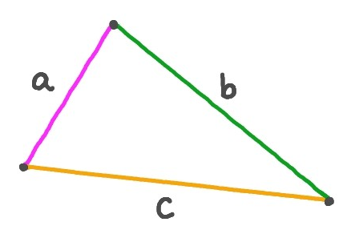
Panorama das Distâncias
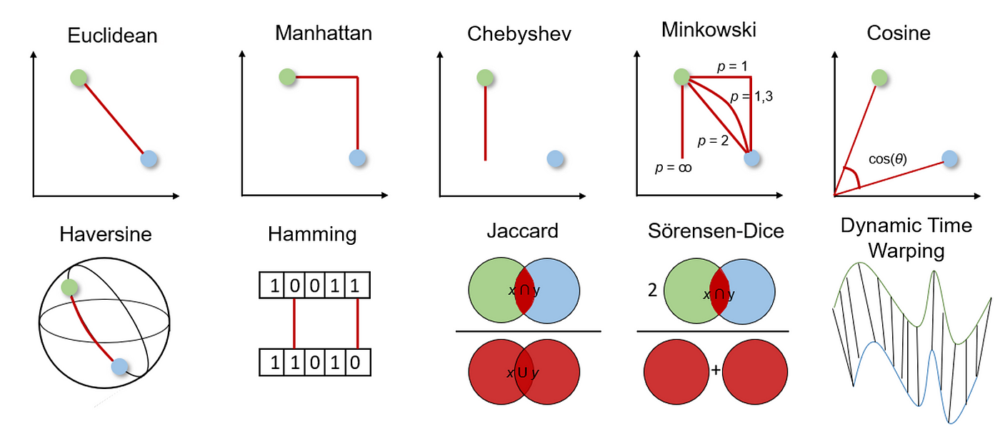
Distância Euclidiana
Mede a separação geométrica “em linha reta” entre dois vetores \(\mathbf{x}\) e \(\mathbf{y}\) no espaço \(\mathbb{R}^n\):
\[ d_E(\mathbf{x}, \mathbf{y}) = \sqrt{\sum_{i=1}^n (x_i - y_i)^2} \]
Características principais:
- Atribui rigorosamente a mesma importância a cada dimensão ou feature.
- Altamente sensível a diferenças de escala (variáveis de magnitude na ordem dos milhares dominarão o cálculo se não houver normalização prévia).
Distância City-Block (Manhattan)
Também conhecida como norma \(L_1\) ou Taxicab. Avalia a distância percorrida em “quadras” ortogonais em \(\mathbb{R}^n\):
\[ d_C(\mathbf{x}, \mathbf{y}) = \sum_{i=1}^n |x_i - y_i| \]
Características principais:
- Calcula a soma das diferenças absolutas entre os componentes.
- É matematicamente menos sensível a outliers severos se comparada à Euclidiana (pois não eleva diferenças ao quadrado).
- Excelente para variáveis que descrevem deslocamentos restritos a eixos.
Distância de Minkowski
Uma generalização matemática das métricas de distância através da introdução do fator \(p\):
\[ d_{Mi}(\mathbf{x}, \mathbf{y}) = \left[ \sum_{i=1}^n |x_i - y_i|^p \right]^{\frac{1}{p}} \]
Configurações Clássicas:
- Se \(p = 1\): Recuperamos a Distância Manhattan.
- Se \(p = 2\): Recuperamos a Distância Euclidiana.
- Se \(p \to \infty\): Obtemos a Distância de Chebyshev (avalia apenas a dimensão com a diferença máxima).
Distância de Minkowski
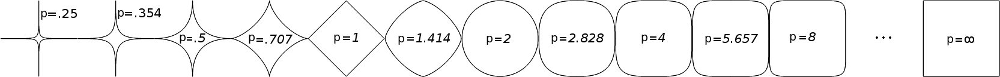
Distância de Mahalanobis
Avança em relação à geometria básica e insere a noção de covariância e estrutura dos dados no cálculo:
\[ d_{Ma}(\mathbf{x}, \mathbf{y}) = \sqrt{(\mathbf{x} - \mathbf{y})^T \Sigma^{-1} (\mathbf{x} - \mathbf{y})} \]
Onde \(\Sigma\) é a matriz de covariância e \(\Sigma^{-1}\) sua inversa.
Características principais:
- Considera tanto a variância individual quanto a correlação estatística entre as variáveis.
- Atribui pesos dinâmicos para dimensões diferentes, tornando o cálculo invariante a escalas. É excepcional para reconhecer anomalias (muito útil em chão de fábrica).
Exemplos Visuais de Distância
Comparativo visual de fronteiras de decisão usando distâncias.
Knowledge Discovery in Databases (KDD)
Descoberta do Conhecimento em Dados (KDD)
O KDD não é apenas rodar um modelo; é a estruturação científica completa para extrair informações reais a partir de bases de dados brutas na engenharia e nos negócios.
As 4 Etapas Core do KDD:
- Definição de objetivos: Compreender o problema (ex: Qual máquina vai falhar e por quê?).
- Seleção da Base: Extração inteligente e integração de dados relevantes dos CLPs, ERPs e sensores.
- Limpeza e Preparação: Remoção de ruídos, tratamento de nulos, descarte de registros duplicados e transformações essenciais.
- Análise Preditiva: Aplicação matemática das heurísticas de Regressão, Classificação ou Agrupamento.
A Realidade dos Dados Brutos
Na indústria, os dados nunca chegam prontos. Eles chegam assim:
A Realidade dos Dados Brutos
Por Que Precisamos de Modelos Inteligentes?
A IA surge da necessidade de processos autônomos em tarefas altamente dimensionais e complexas:
- Redução de Intervenção Humana: Diminuir a dependência de análises exaustivas feitas por especialistas locais.
- No Diagnóstico Médico (ou Industrial): Sintomas (ou vibrações físicas) apresentam alta variabilidade e combinações caóticas. O modelo identifica a doença (ou falha) aprendendo sistematicamente com exemplos passados.
- Estratégia e Vendas: “Quais peças sobressalentes saem em conjunto do almoxarifado?” Padrões ocultos nos dados operacionais guiam a eficiência dos estoques.
Motivação: Reconhecimento Facial
Objetivo: Desenvolver um programa que reconheça pessoas pelo rosto.
- Diferentes expressões faciais.
- Alterações na face (óculos, barba, bigode).
- Variações de cortes de cabelo.
- Combinação de características que geram categorias complexas, como emoções.
Questão fundamental: Que características considerar?
Seres humanos utilizam o reconhecimento de padrões e aprendem o que observar após vários exemplos.
Motivação: Diagnóstico Médico
Objetivo: Desenvolver um programa que diagnostique pacientes com base em sintomas e exames.
- Complexidade e variabilidade dos sintomas.
- Requer conhecimento médico especializado e experiência.
Paralelo com médicos: Os médicos tomam decisões baseadas em aprendizado contínuo com a prática e novos casos.
Aprendizado de Máquina (Machine Learning)
- Trata-se do conjunto de técnicas matemáticas voltadas para criar uma função (hipótese) derivada diretamente de experiências e dados passados.
- Esse mapeamento permite ao sistema generalizar resoluções sem depender de código e instruções preestabelecidas rigorosamente (IF-THEN limitados).
Exemplo Clássico Induzido (Regra Lógica): Se a Temperatura do Mancal > 90°C E Vibração de Alta Frequência estiver presente \(\Rightarrow\) Estado: Risco de Falha. O aprendizado de máquina “descobre” esses limites e regras observando terabytes de telemetria histórica.
Objetivo da Classificação Visual
Encontrar os hiperplanos, regras matemáticas ou funções discriminantes capazes de separar e isolar os objetos no espaço n-dimensional.
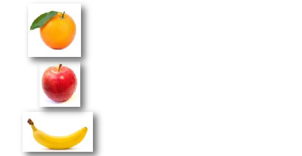
Objetivo da Classificação Visual
Encontrar os hiperplanos, regras matemáticas ou funções discriminantes capazes de separar e isolar os objetos no espaço n-dimensional.
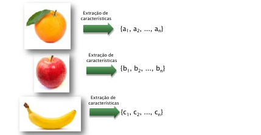
Objetivo da Classificação Visual
Encontrar os hiperplanos, regras matemáticas ou funções discriminantes capazes de separar e isolar os objetos no espaço n-dimensional.
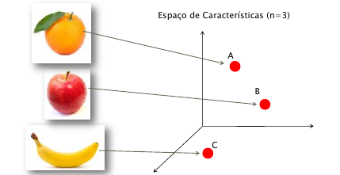
Objetivo da Classificação Visual
Encontrar os hiperplanos, regras matemáticas ou funções discriminantes capazes de separar e isolar os objetos no espaço n-dimensional.
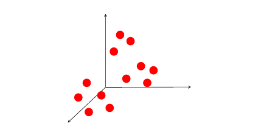
Objetivo da Classificação Visual
Encontrar os hiperplanos, regras matemáticas ou funções discriminantes capazes de separar e isolar os objetos no espaço n-dimensional.
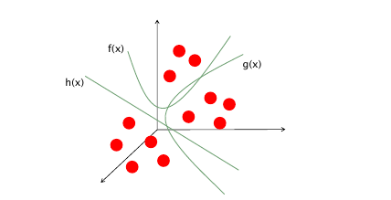
Atributos e Discriminabilidade
A separabilidade das classes depende fortemente de quais características usamos (Feature Engineering).
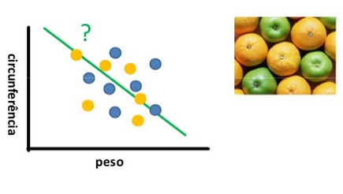
Atributos e Discriminabilidade
Um mapeamento inadequado torna a classificação matematicamente intratável sem modelos não-lineares severos.
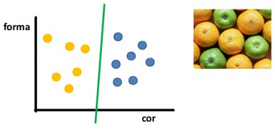
Aprendizagem Supervisionada
Classificação
Definição: Associar objetos a uma categoria ou classe com base em suas características.
Exemplos:
- Diagnóstico de pacientes com base em sintomas e exames.
- Classificação de clientes por risco de inadimplência.
- Organização automática de documentos por categorias.
- Identificação de spam em e-mails.
Os algoritmos de classificação aprendem a classificar melhor com o tempo à medida que novos exemplos/objetos são observados.
O Fluxo Supervisionado
- O algoritmo é alimentado com entradas \(\mathbf{x}\) e seus rótulos corretos \(y\) conhecidos (Ground Truth).
- O modelo procura uma função heurística onde \(h(\mathbf{x}) \approx f(\mathbf{x})\).
- O objetivo primário é a generalização: o modelo deve conseguir prever as classes para dados completamente novos e nunca vistos.
- Aplicações: Classificação do grau de risco financeiro, categorização automática de PDFs técnicos, ou detecção acústica de falhas.
Componentes Analíticos
- Instância / Objeto: É a tupla completa contendo o perfil de atributos mais a sua respectiva classe.
- Descritores (Features): As variáveis independentes alimentadas no modelo.
- Classe / Alvo (Target): A variável dependente (resultado a ser previsto).
Classificação e Natureza dos Atributos:
- Numéricos vs. Categóricos: Peso (kg) vs. Gravidade da Falha.
- Contínuos vs. Discretos: Corrente do Motor (Amperes) vs. Quantidade de Defeitos.
- Ordinais vs. Nominais: Estatura (P, M, G) vs. Fabricante (Siemens, WEG).
Desafios Comuns em Dados de Treinamento
- Desbalanceamento Estrutural: Uma classe sobrepõe amplamente a outra. Na indústria, temos meses de “operação normal” contra 3 horas de “falha”. O modelo tenderá a favorecer a maioria estatística se não corrigido.
- Qualidade das Features: O impacto de features irrelevantes (aumentam a confusão) ou features redundantes (multiplicam o peso de um mesmo fenômeno indevidamente, gerando colinearidade).
- Ruído Aleatório Intrinseco: Flutuações térmicas, erros de transcrição humana ou limitações físicas no hardware do sensor.
Principais Indutores: K-Nearest Neighbors (KNN)
Um algoritmo preguiçoso (lazy learning) baseado puramente em métricas espaciais (distância).
Vantagens:
- Facílimo de compreender, auditar e codificar matematicamente.
- Não compila um modelo explícito genérico; as instâncias históricas são o próprio modelo de consulta.
Desvantagens:
- Complexidade de inferência e custo computacional altíssimos para bases contendo milhões de linhas (Big Data).
- Demanda obrigatoriamente que todas as características sejam normalizadas ou reescaladas antes do uso.
KNN: O Impacto da Escala
Se o Atributo 1 está na casa das centenas, a distância Euclidiana será dominada por ele.
Base Bruta Original (Sem Normalização)
| 170 |
68 |
A |
| 180 |
75 |
B |
| 160 |
50 |
A |
| 150 |
45 |
A |
Base Processada (Após Normalização Numérica)
| 0.8 |
0.9 |
A |
| 1.0 |
1.0 |
B |
| 0.6 |
0.7 |
A |
| 0.5 |
0.6 |
A |
Principais Indutores: Árvores de Decisão
Segmentam iterativamente o espaço baseado no ganho de informação (Entropia ou Gini).
Vantagens
- Mapeamento transparente e altamente interpretável visualmente (regras explícitas IF-THEN).
- Lida naturalmente com atributos categóricos e numéricos contínuos simultaneamente.
Desvantagens
- Tendência ao Overfitting, especialmente em árvores profundas.
- Alta sensibilidade aos dados: pequenas alterações na base de treinamento podem resultar em árvores significativamente diferentes.
Exemplo de Construção de Árvore
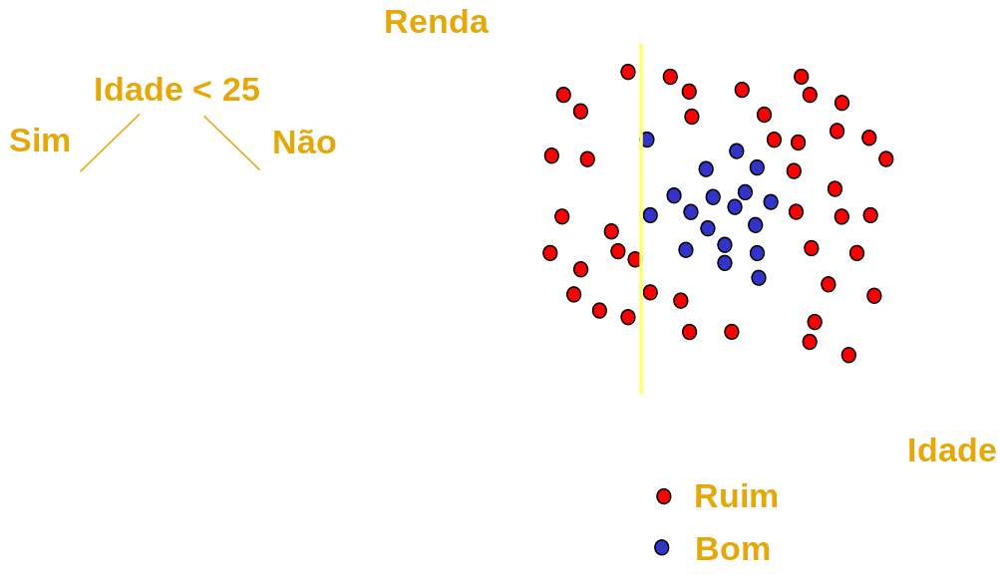
Exemplo de Construção de Árvore
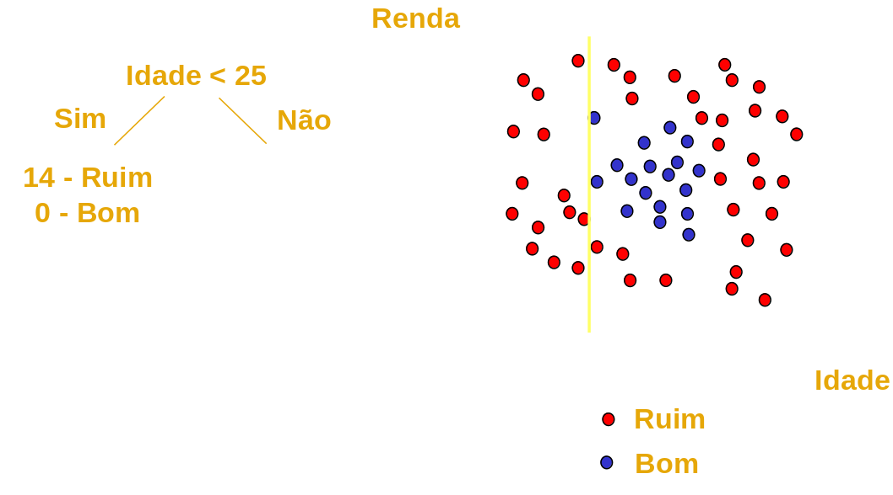
Exemplo de Construção de Árvore
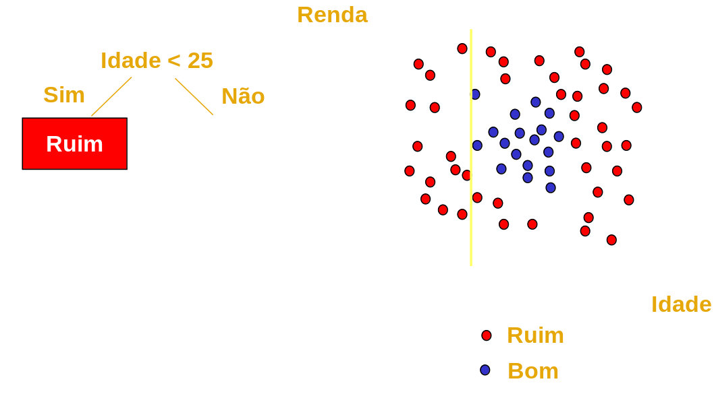
Exemplo de Construção de Árvore
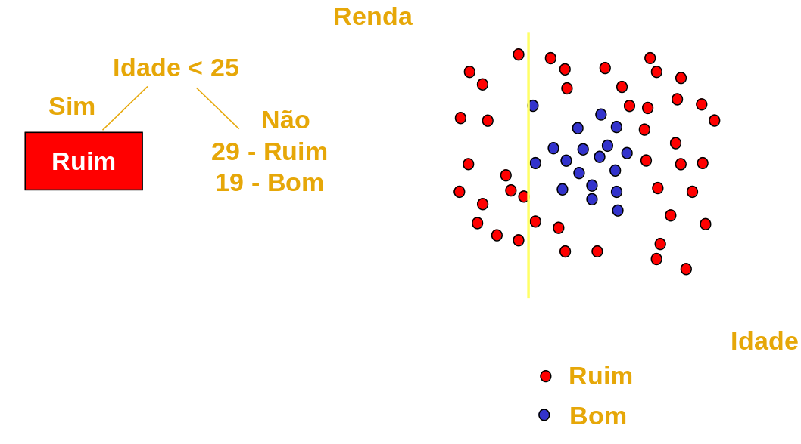
Exemplo de Construção de Árvore
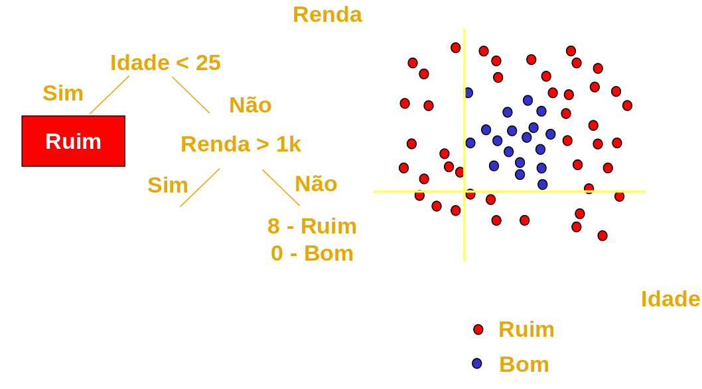
Exemplo de Construção de Árvore
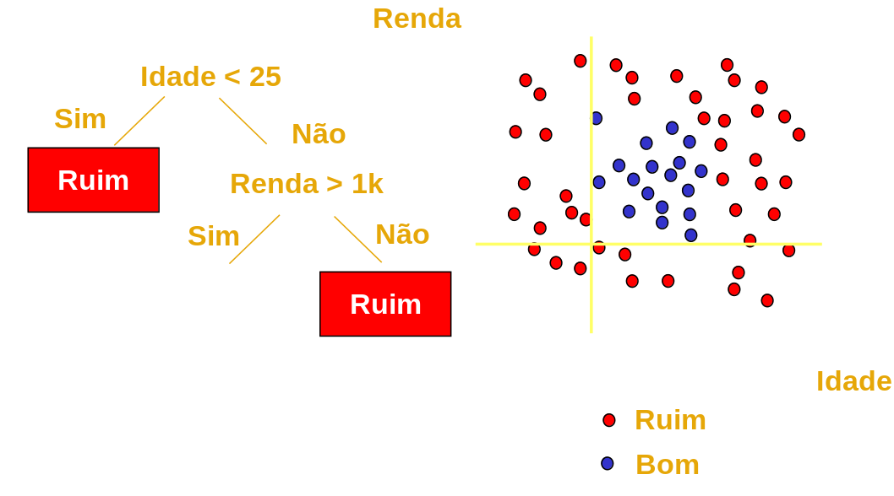
Exemplo de Construção de Árvore
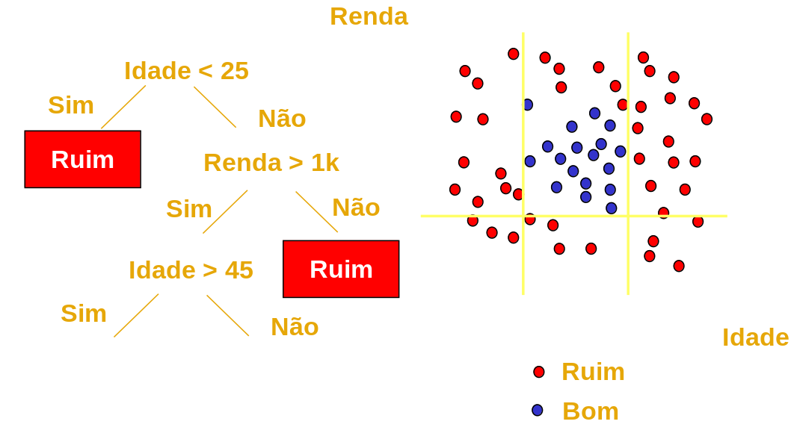
Exemplo de Construção de Árvore
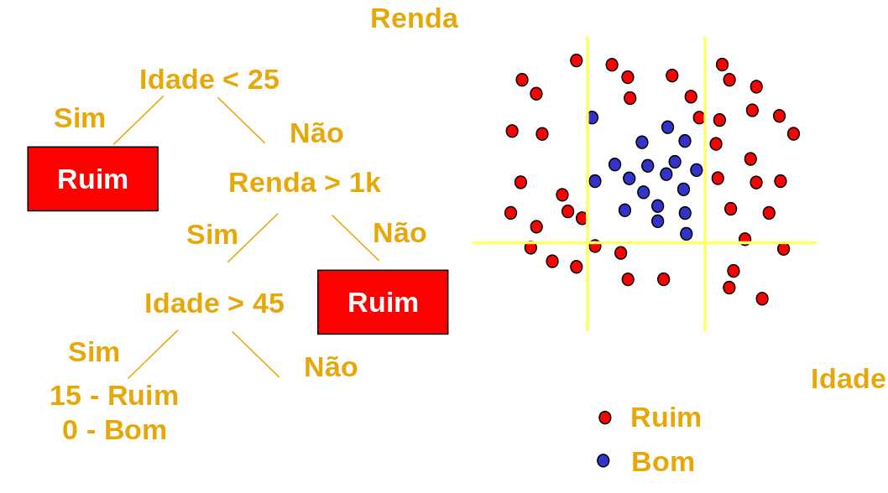
Exemplo de Construção de Árvore
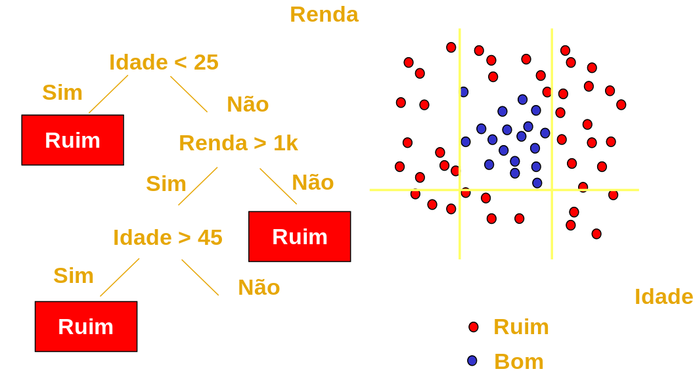
Exemplo de Construção de Árvore
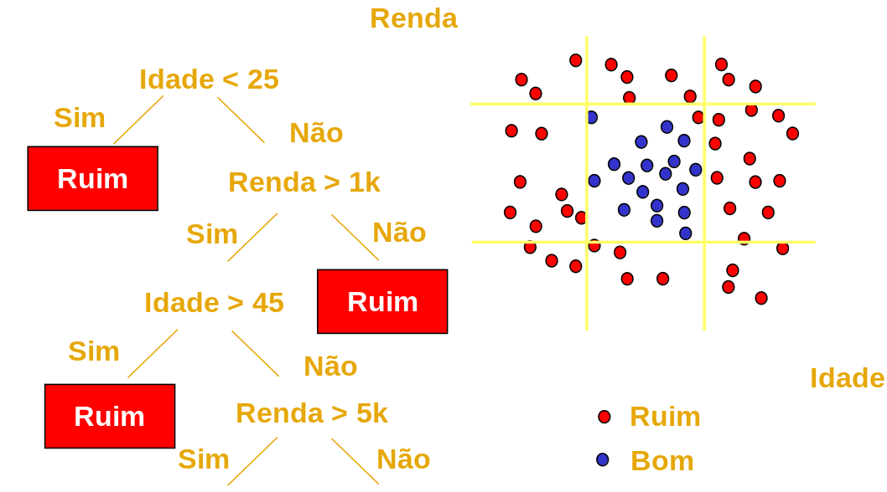
Exemplo de Construção de Árvore
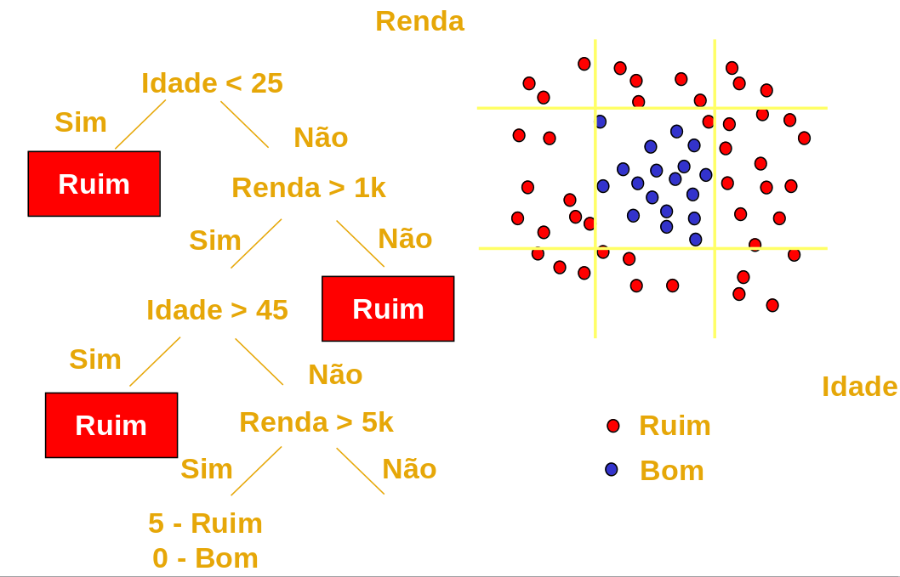
Exemplo de Construção de Árvore
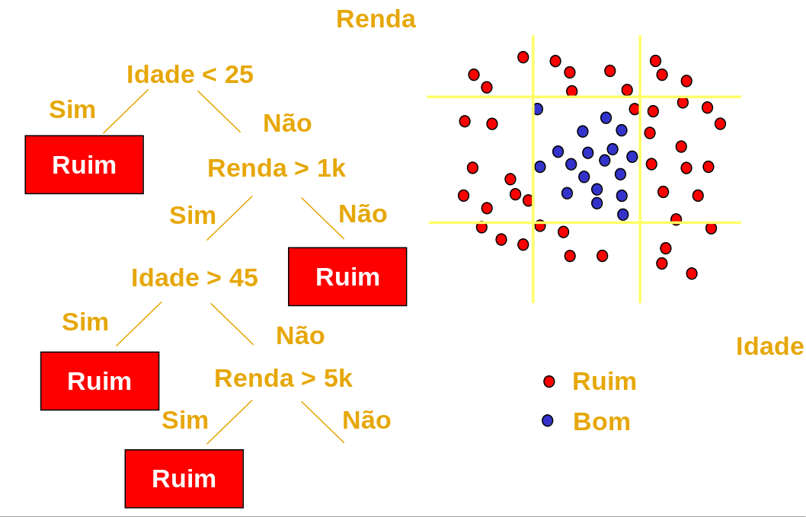
Exemplo de Construção de Árvore
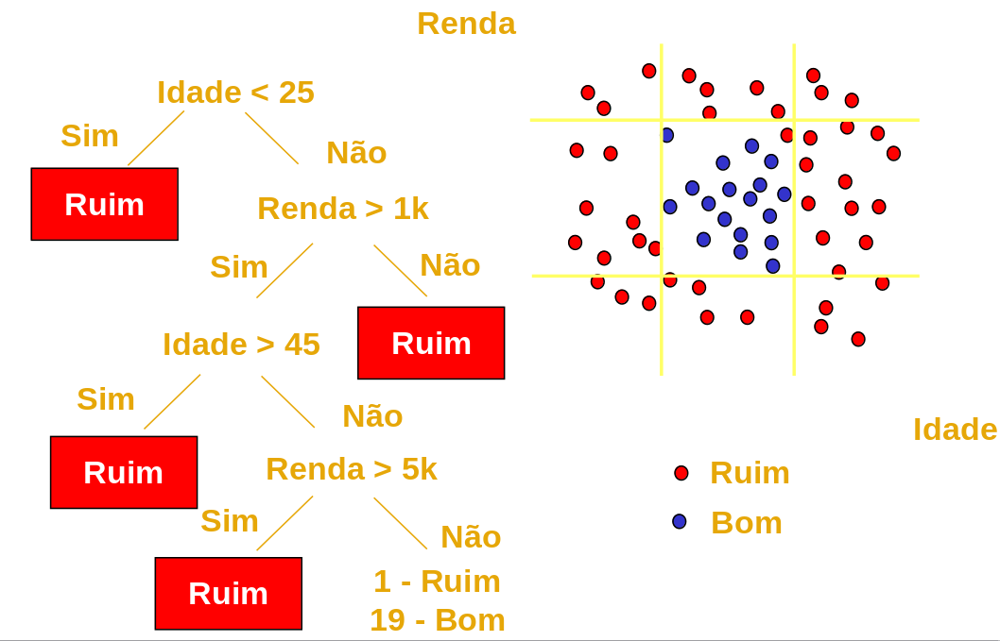
Exemplo de Construção de Árvore
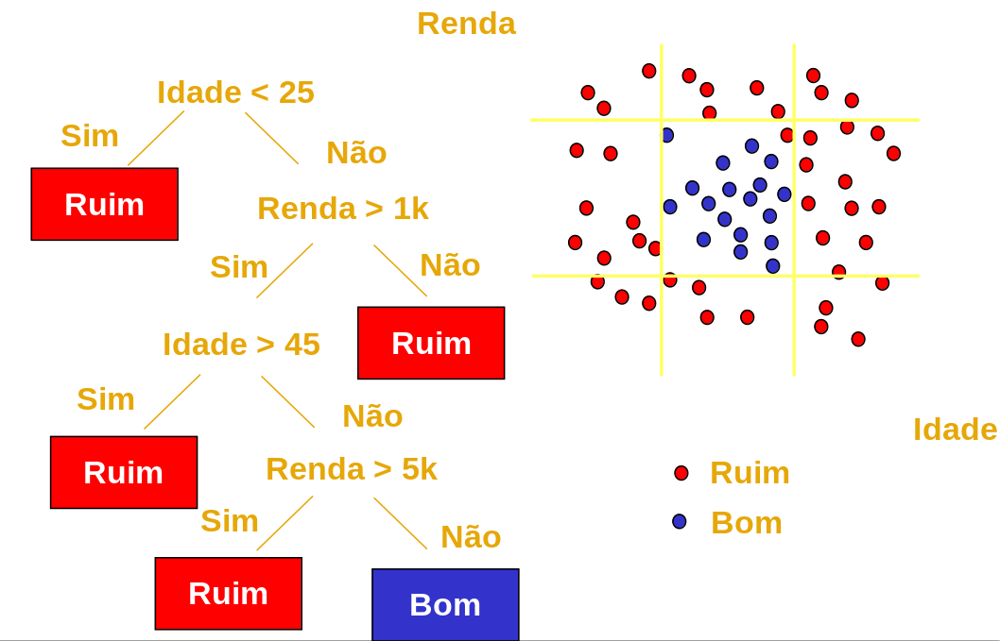
Ensembles: Random Forest
Método baseado no treinamento paralelo de dezenas ou centenas de Árvores de Decisão (bagging).
Vantagens
- Reduz significativamente o overfitting das árvores individuais por meio da diversidade das amostras.
- Alta robustez e excelente desempenho preditivo, especialmente em dados tabulares.
Desvantagens
- Maior custo computacional de treinamento em comparação com uma única árvore.
- O desempenho pode ser afetado por atributos altamente correlacionados sem tratamento adequado.
Métodos de Boosting
O Boosting é uma técnica de ensemble que combina vários modelos fracos para formar um modelo mais preciso. Cada novo modelo é treinado para corrigir os erros cometidos pelos modelos anteriores, melhorando o desempenho de forma incremental.
Principais algoritmos
- AdaBoost: aumenta o peso das amostras classificadas incorretamente.
- Gradient Boosting: otimiza o modelo reduzindo iterativamente o erro.
- XGBoost: versão otimizada do Gradient Boosting, com alta eficiência e desempenho.
- CatBoost: otimizado para trabalhar com atributos categóricos, exigindo pouco pré-processamento.
- LightGBM: projetado para treinamento rápido e escalabilidade em big data.
Ensembles: AdaBoost
Treina uma sequência de modelos fracos, onde cada novo modelo dá maior atenção às amostras classificadas incorretamente pelos modelos anteriores.
Vantagens
- Simples de implementar e compreender.
- Reduz o erro ao focar progressivamente nos exemplos mais difíceis.
- Pode alcançar alta precisão quando os dados possuem pouco ruído.
- Funciona bem com modelos fracos, como árvores de decisão rasas (stumps).
Desvantagens
- Sensível a ruídos e outliers, pois tende a aumentar o peso dessas amostras.
- O treinamento é sequencial, dificultando a paralelização.
- Pode apresentar queda de desempenho em bases muito complexas ou desbalanceadas.
- Requer ajuste adequado do número de modelos e da taxa de aprendizado.
Ensembles: AdaBoost
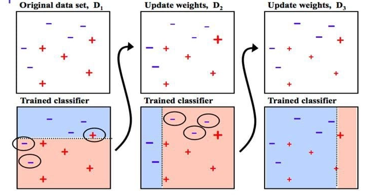
Ensembles: Gradient Boosting
Constrói uma sequência de modelos fracos, onde cada novo modelo é treinado para corrigir os erros residuais do conjunto de modelos já criado.
Vantagens
- Geralmente apresenta alta precisão em tarefas de classificação e regressão.
- Modela relações complexas entre os atributos.
- Flexível, permitindo diferentes funções de perda conforme o problema.
- Base para algoritmos modernos, como XGBoost, LightGBM e CatBoost.
Desvantagens
- Treinamento mais lento devido à construção sequencial dos modelos.
- Requer ajuste cuidadoso de hiperparâmetros (número de árvores, profundidade e taxa de aprendizado).
- Pode sofrer overfitting se os parâmetros não forem bem configurados.
- Consome mais recursos computacionais do que métodos mais simples.
Ensembles: Gradient Boosting
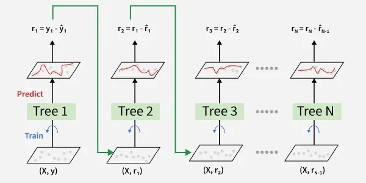
Support Vector Machines (SVM)
Encontra um hiperplano que separa as classes com a maior margem possível, utilizando os vetores de suporte (amostras mais próximas da fronteira).
Vantagens
- Excelente desempenho em problemas de alta dimensionalidade.
- Eficaz quando há poucas amostras e muitos atributos.
- O Kernel Trick permite resolver problemas com separação não linear convertendo as características num domínio hiperdimensional alternativo.
- Boa capacidade de generalização quando bem configurado.
Desvantagens
- Escolher o kernel e seus parâmetros pode ser desafiador.
- Treinamento lento em bases de dados muito grandes.
- Menor interpretabilidade em comparação com árvores de decisão.
- Sensível à escolha dos hiperparâmetros.
Representação Gráfica do SVM
Separação de classes maximizando a margem (largura entre os vetores de suporte).
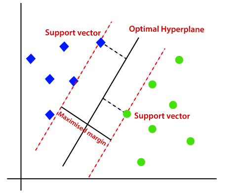
Engenharia e Seleção de Características (Feature Selection)
Seleção de Características
Muitos algoritmos de classificação são projetados para selecionar as características mais relevantes para a tomada de decisão.
- Algoritmos de indução de árvores de decisão, por exemplo, são projetados para escolher o atributo mais promissor para particionar o conjunto de dados.
- O objetivo é nunca selecionar atributos irrelevantes.
A questão é: Mais atributos implicam em maior poder discriminatório?
Impacto de Características Irrelevantes
A inclusão de características pouco significativas em relação à classe alvo geralmente “confunde” o algoritmo de classificação/aprendizado.
- A presença de atributos irrelevantes pode diminuir a precisão do modelo, pois esses atributos podem criar “ruído” no processo de decisão.
- Muitos atributos podem resultar em overfitting, onde o modelo se ajusta demais aos dados de treinamento, perdendo capacidade de generalização.
Algoritmos Mais Afetados
A seleção inadequada de características pode afetar mais alguns tipos de algoritmos:
- Indutores de Árvores de Decisão: A quantidade de dados é reduzida continuamente a cada escolha/divisão, o que pode gerar complexidade excessiva.
- Indutores baseados em instâncias (e.g., k-NN): Esses algoritmos sempre trabalham com vizinhanças locais e levam em consideração apenas algumas poucas instâncias (\(k\)).
É conhecido que, para se alcançar um bom nível de desempenho, a quantidade de amostras necessárias cresce exponencialmente.
Benefícios da Seleção de Características
- Melhora o desempenho preditivo: A remoção de atributos irrelevantes pode melhorar a capacidade do modelo de fazer previsões precisas.
- Acelera o processo de aprendizado: Com menos dados, o algoritmo pode aprender mais rapidamente.
- Representação mais compacta: A seleção foca nas características realmente importantes para a definição do conceito/classe a ser aprendido.
No entanto, o processo de seleção de características pode ser custoso em termos computacionais e, às vezes, seu custo pode superar o ganho em desempenho.
Redução de Dimensionalidade
- O objetivo é criar uma representação reduzida das características, preservando ao máximo a informação presente nos dados.
- Em geral, a redução de dimensionalidade melhora o desempenho dos classificadores.
- O objetivo é eliminar atributos redundantes ou irrelevantes, simplificando a fase de aprendizado e classificação.
Métodos de Seleção de Características
Existem diferentes abordagens para a seleção de características, que podem ser divididas em dois principais tipos:
- Manual: Melhor quando há um entendimento profundo tanto sobre o problema de aprendizado quanto sobre o significado das características.
- Automático:
- Filtros: Método usado antes do processo de aprendizado para selecionar um subconjunto de características com base em critérios estatísticos ou heurísticos.
- Wrappers: A escolha do subconjunto de características está integrada com o algoritmo de aprendizado/classificador, avaliando a qualidade do conjunto de características durante o treinamento.
Métodos Automáticos
Remover redundância melhora a representação matemática reduzida, refinando as aproximações de aprendizado. As principais principais em Inteligência Artificial incluem duas visões matemáticas em métodos estatísticos:
- Abordagem Filtros: Opera pré-processando e selecionando características estatísticas avaliando individualmente as forças e variáveis (ex. critério Qui-quadrado e correlações estritas tipo Pearson) desvinculadas das especificidades do algoritmo.
- Abordagem Wrappers: Avalia os resultados integrados recursivamente de subconjuntos completos empiricamente combinados submetidos na arquitetura contínua de validação da indução, verificando de fato no modelo iterativamente.
Algoritmos Wrappers - Busca para Frente (SFS)
A Busca Sequencial para Frente (SFS) é um algoritmo de seleção de características que segue os seguintes passos:
- Inicia com o subconjunto de características vazio.
- A melhor característica individual é selecionada de acordo com uma função critério.
- A segunda característica que, em conjunto com a primeira, formar a melhor dupla, é selecionada.
- Este processo continua de forma “gulosa”, com a adição de características até que:
- O tamanho máximo do subconjunto seja atingido, ou
- A função critério pare de “melhorar” com a adição de novas características.
Efeito “nesting”: A seleção de características pode ser influenciada por características já adicionadas.
Algoritmos Wrappers - Busca Sequencial para Trás (SBS)
A Busca Sequencial para Trás (SBS) segue uma abordagem semelhante à Busca para Frente, mas com algumas diferenças:
- Inicia com o subconjunto contendo todas as características disponíveis.
- A cada passo, uma característica é removida com base na função critério adotada.
- É comum restringir a busca a subconjuntos menores de características, evitando a remoção de muitas características de uma vez.
- Pode-se adotar uma medida de melhoria a cada iteração para evitar que pequenas variações causem a remoção excessiva de características.
Busca Flutuante para Frente (SFFS)
A Busca Flutuante para Frente (SFFS) combina as ideias da busca para frente com uma técnica de “flutuação” das características:
- A busca é iniciada com o subconjunto vazio, selecionando a melhor característica individualmente de acordo com uma função critério.
- Em seguida, a segunda característica que, em conjunto com a primeira, formar a melhor dupla, é escolhida.
- A partir da terceira característica, o algoritmo tenta fazer uma exclusão condicional para remover características que não contribuem significativamente para o desempenho.
Evita o efeito “nesting”: Ao permitir a remoção de características durante o processo, evita-se a seleção de um conjunto subótimo.
SBFS (Seleção Sequencial Flutuante para Trás)
A Seleção Sequencial Flutuante para Trás (SBFS) segue a lógica do SFFS, mas invertendo o processo:
- Inicia com todas as características e tenta remover as menos importantes de acordo com a função critério.
- Durante a busca, o algoritmo permite a reinclusão de características que possam melhorar o desempenho, garantindo que o processo não se prenda a um conjunto de características subótimo.
Filtros vs Wrappers
Filtros:
- O processo de escolha do subconjunto de características ocorre antes do aprendizado.
- Não dependem diretamente do modelo de classificação utilizado.
- Exemplos: Testes estatísticos, correlação de Pearson, teste qui-quadrado.
Wrappers:
- A escolha do subconjunto de características está “empacotada” com o algoritmo de aprendizado.
- Dependem diretamente do modelo de classificação utilizado.
- Exemplos: Algoritmos como SFS, SBS, e métodos baseados em redes neurais.
Diferença principal: Filtros selecionam características antes do aprendizado, enquanto Wrappers envolvem o aprendizado no processo de seleção.
Avaliação e Validação de Modelos
Matriz de Confusão
A Matriz de Confusão tem como objetivo medir a similaridade entre as respostas do classificador e as classes conhecidas para as amostras. Cada elemento desta matriz indica o quão “confuso” foi o classificador ao tentar classificar corretamente cada amostra.
- Utilizada para estimar o erro de classificação ao sumarizar os resultados do classificador.
- O número de acertos é identificado na diagonal principal \(M(C_i, C_i)\).
- Os elementos fora da diagonal \(M(C_i, C_j)\), para \(i \neq j\), representam os erros de classificação.
- Em um classificador ótimo, a diagonal principal possui valores positivos e todas as demais posições têm valores iguais a zero.
Estrutura da Matriz
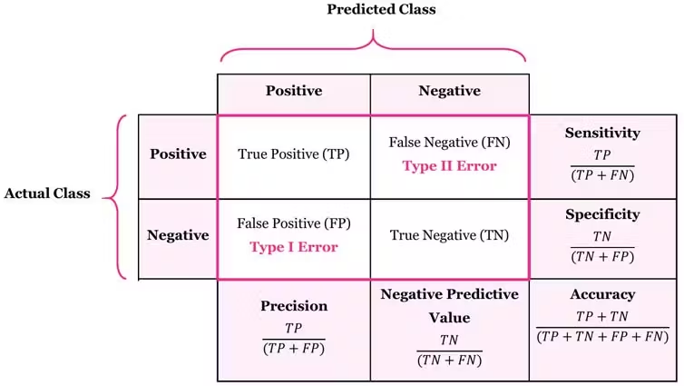
Métodos de Validação
Holdout:
- O conjunto de dados é dividido em dois subconjuntos: (2/3) para treinamento e (1/3) para teste.
Validação Cruzada (k-fold):
- O conjunto de dados é dividido em (k) subconjuntos exclusivos e exaustivos.
- O algoritmo é executado (k) vezes, utilizando um subconjunto diferente para teste em cada execução.
Bootstrap:
- A amostragem é feita com reposição, permitindo que o mesmo exemplo apareça múltiplas vezes no conjunto de treinamento.
Desbalanceamento entre Classes
Suponha um conjunto de amostras com a seguinte distribuição de classes:
- distribuição((C1, C2, C3) = (99,00%, 0,25%, 0,75%)).
Um classificador simples que classifique sempre novos exemplos como pertencentes à classe majoritária (C1) teria uma acurácia de (99,00%).
- Isto pode ser indesejável quando as classes minoritárias, como (C2) e (C3), contêm informações importantes.
Exemplo:
(C1): transação normal (500 transações)
(C2): transação fraude (4 operações)
Acurácia (amostras) = 90%
Classificou corretamente 454 transações que não são fraude.
Não acertou nenhuma das transações de fraude.
Pode ser considerado um “bom classificador”?
O Perigo do Desbalanceamento (Ilusão da Acurácia)
- Histórico de Vibração (\(C1\) - Operação Normal): 500 aferições (transações).
- Histórico de Choque Anômalo (\(C2\) - Falha / Fraude): 4 aferições (transações atípicas operacionais avaliáveis perigosas com alto risco na ponta).
Um classificador que prevê sempre a classe majoritária pode apresentar alta acurácia, mas falha completamente em identificar os casos críticos da classe minoritária. Em aplicações de manutenção preditiva, isso significa ignorar falhas importantes, tornando o modelo inadequado apesar da elevada acurácia.
Medidas de Desempenho
A combinação de várias métricas é essencial para avaliar corretamente o desempenho de um classificador, especialmente em cenários com classes desbalanceadas. Algumas das principais métricas incluem:
- Acurácia: Percentual de classificações corretas.
- Precisão: Percentual de exemplos classificados como positivos que são realmente positivos.
- Recall: Percentual de exemplos positivos corretamente identificados.
- MCC (Coeficiente de Correlação de Matthews): Uma métrica que considera todas as quatro combinações possíveis de classes.
- Sensibilidade: Medida da capacidade do classificador de identificar casos positivos.
- F1-Score: A média harmônica entre precisão e recall.
Cada uma dessas métricas tem seu uso dependendo do cenário, sendo que, em conjuntos desbalanceados, algumas delas podem ser mais informativas que outras.
Curva ROC
A Curva ROC (Receiver Operating Characteristic) é uma ferramenta gráfica utilizada para avaliar o desempenho de classificadores binários. Ela exibe a taxa de falsos positivos (FPR) no eixo X e a taxa de verdadeiros positivos (TPR) no eixo Y.
- A curva ROC permite visualizar a capacidade de discriminação do modelo em diferentes limiares de decisão.
- Quanto mais próxima da parte superior esquerda da área do gráfico, melhor o desempenho do modelo.
A área sob a curva (AUC) é frequentemente usada como uma métrica adicional para quantificar o desempenho do modelo.
AUC (Área Sob a Curva)
A AUC (Área Sob a Curva) é uma métrica derivada da curva ROC. Ela quantifica a área total sob a curva ROC e varia de 0 a 1.
- AUC = 1: Classificador perfeito.
- AUC = 0.5: Classificador aleatório (sem poder discriminativo).
- AUC < 0.5: Classificador pior que o aleatório.
A AUC é útil porque:
- Avalia o modelo independentemente do limiar de decisão.
- Fornece uma medida da capacidade do modelo em distinguir entre as classes.
Curva ROC e AUC na Prática